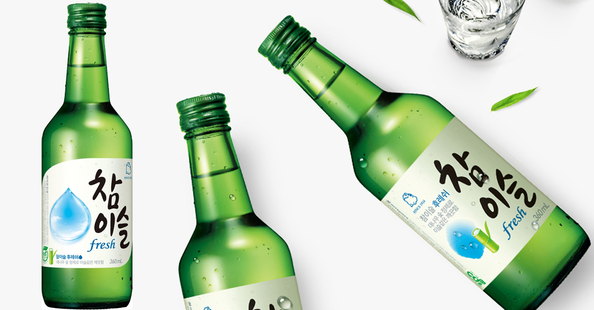
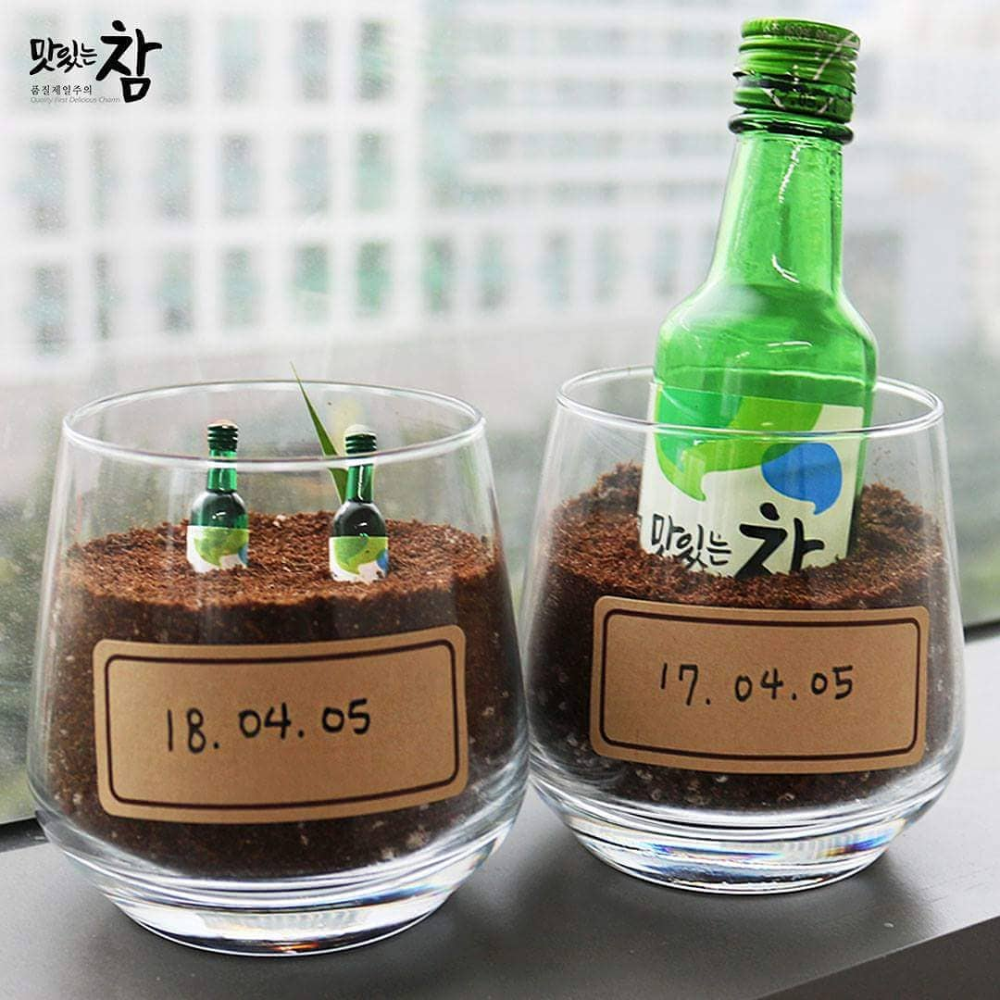
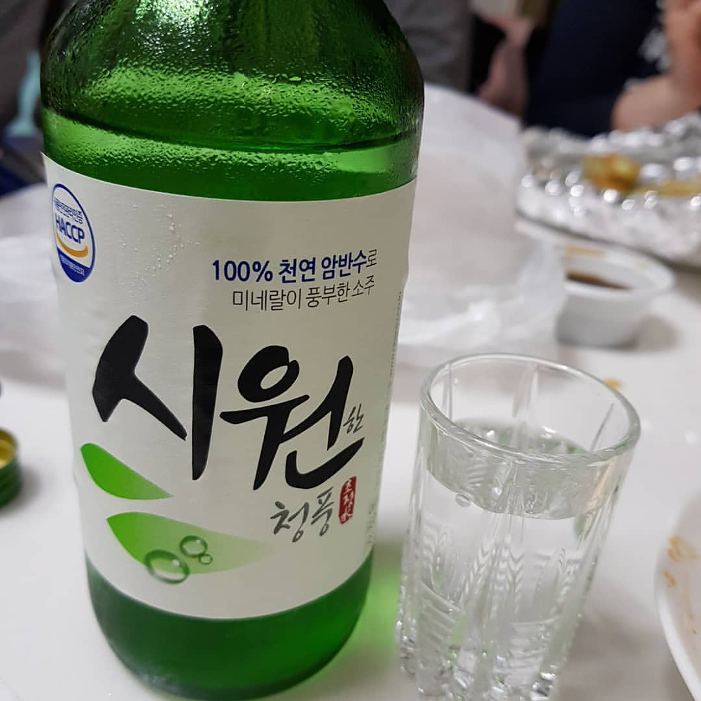

KOREA 술


한국술 TOP1-참이슬 : 하이트진로의 대표 소주로 부동의 한국 1위 서울과 수도권 지역의 소주이다. 물론 국가 대표 소주라고 하면 모두가 고개를 끄덕인다. 딱히 구분 지을 장점은 없다. 이유는 사람이 항상 소고기를 먹으면 장점을 소고기 만의 장점을 모르듯이 대한민국 국민들 모두가 참이슬이 주 술이기 때문에 장점을 쉽게 찾을수 없다.

한국술 TOP2- 맛있는 참 : 16.9도 로 술을 좋아하는 사람들에게 가장 인기 있는 술이다. 대구의 대표적인 술로 술이 잘넘어간다고 생각하고 계속마시다보면 쉽게 만취가 되는 술이다.
한국술 TOP3- 시원(C1) : 부산의 대표 술! 희석식 소주로 시원이라고 한다.도수는 기본 19도 이며 시원 오리지널은 21도 이다. 알콜의 향이 코를 딱 때리는 느낌과 살짝 떫은 느낌으로 혀의 돌기를 건드리는 느낌이 든다. 처음 소주를 먹는 사람에게는 시원 오리지널은 추천하지 않는다.